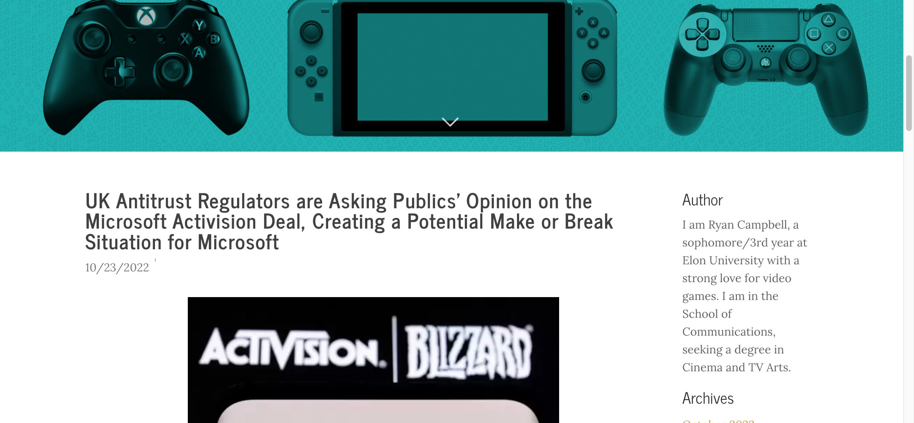
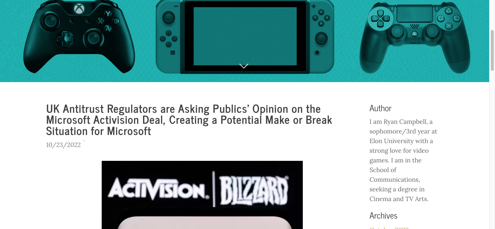

I am a 21 year old, currently a junior at Elon University.
I was born on May 25, 2001 in Ridgewood, New Jersey.
I lived in Wycoff, New Jersey for the first four years of my life to 2005.
My family moved to Apex, North Carolina on November 2005 and have lived there since.
Previously, I earned my High School Diploma at Middle Creek High School between 2016 and 2020.
Also, I earned my Associate of Arts degree at Wake Technical Community College between 2020 and 2022.
I am working in the School of Communications, working to get a Bachelor's degree in Cinema and Television Arts, while minoring in the English Department, taking Creative Writing.
I am aspiring to work as either a novelist, screenwriter, and/or movie director.
During the summer and fall of 2021, I worked at the grocery store Food Lion as both a cashier and customer lead.
My job as cashier was to ring up people's groceries, get them through the line as quickly as possible, and be prepared for any problem that come around.
As a customer lead, I was responsible for gathering carts, bringing to-go orders to the customer's cars, and to assist with packing large orders in the checkout lines.
During the summer and winter of 2022, I worked at theater chain Regal Cinemas, as a cashier, usher, and bartender.
My responsibilities as a cashier was to take people's orders, and make sure the line moved fast enough to get everyone.
As an usher, I was responsible for keeping theater auditoriums and the main lobby clean. I also had to help with concessions when it got busy enough.
When I had reached the age of 21, I was assigned bartending, where I earned by license by the North Carolina ABC to serve alcohol. I was responible for taking people's drinks, knowing the recipes for mixed drinks, IDing people and making sure the law was followed.
During the summer of 2019, I did an internship at the megachurch, Hope Community Church, where I helped with live camera work and working on scripted interviews for videos.
As a live cameraman, I worked during afternoon services to help film the live music to ensure that the audience could see what was most important in the moment. I also helped with taking inventory and how to organize equipment properly.
As an assistant for scripted moments, I helped with putting together the cameras, lighting equipment, and editing. I also helped with operating the teleprompter during smaller shoots and with editing footage together.
Attended Middle Creek High School between 2016 to 2020 and earned my high school diploma.
During my time at the school, I was a part of the Digital Media Academy, SkillsUSA, and the Technical Honor Society.
I learned how to use Adobe Products and even managed to earn certification. I earned a weighted GPA of 4.2.
Attended Wake Tech between 2020 and 2022, earning my Associates Degree of the Arts.
I became a part of the college's honor program, where I got to create a project on one of the subjects I was taking for the semester. The project I created was in regards to the Mongols and Mughals.
I also became a part of the college's branch of the National Society of Leadership and Success.
Currently attending Elon University, joined 2022 to earn a Cinema and TV Arts degree in the School of Communications.
I have taken part of Cinelon, a student ran organization dedicated towards the creation of short films or music videos. I have worked on a music video, "Could It Be" as a Grip and am currently working on the short film "The Last Date" as the editor.
I have also taken part as a member of the Student Union Board for Cinema. I help with the nights when films are showing and make sure people get refreshments prior and check in.
 
